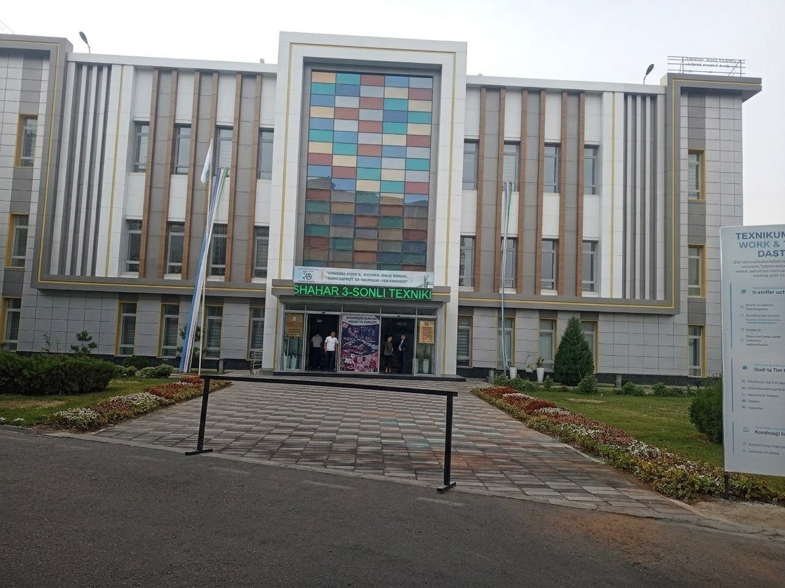
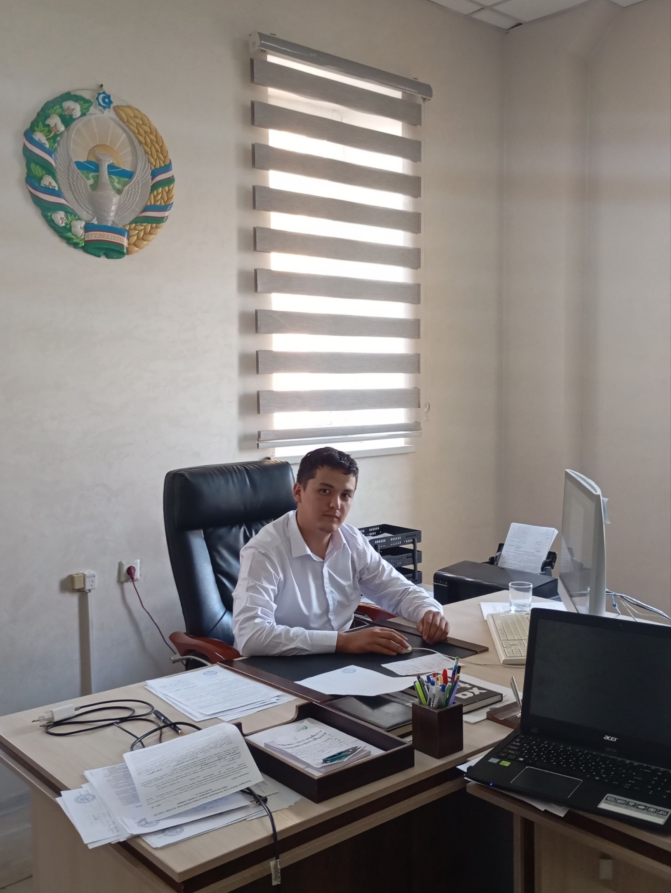
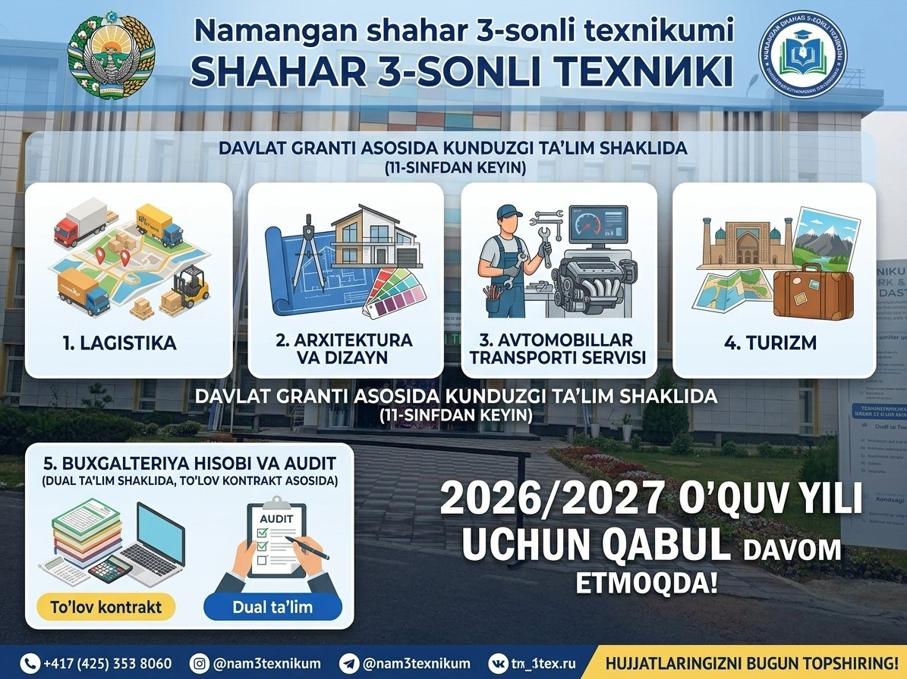

<!doctype html><html lang="uz"><meta charset="utf-8"><meta name="viewport" content="width=device-width,initial-scale=1"><link rel="icon" type="image/jpeg" href="assets/texnikum-building-2026.jpg"><title>Web Ta’lim • Raqamli ta’lim resursi</title><style>
*{box-sizing:border-box}body{margin:0;background:#f6f8fb;color:#202d43;font:15px/1.7 system-ui}button{font:inherit;cursor:pointer}aside{position:fixed;width:290px;inset:0 auto 0 0;background:white;border-right:1px solid #e3e8ef;padding:30px 20px;overflow:auto}.brand{font-size:24px;font-weight:800;color:#126b58}.brand small{display:block;font-size:11px;letter-spacing:2px;color:#83918f;margin-top:0}.label{font-size:11px;letter-spacing:2px;color:#8b95a5;margin:36px 12px 12px}.nav,summary{padding:12px;border:0;border-radius:9px;background:transparent;width:100%;text-align:left;font-weight:600;color:#4a586c}.nav:hover,summary:hover{background:#f0f6f4}summary{cursor:pointer}.lessons{margin-left:18px;border-left:1px solid #e4e9e8;padding-left:10px}.lesson{font-size:13px;font-weight:400}.active{background:#e5f4ed!important;color:#13745b!important}main{margin-left:290px}header{height:82px;background:#ffffffb0;border-bottom:1px solid #e3e8ef;padding:24px 5%;display:flex;justify-content:space-between;align-items:center;font-size:13px}.pill{padding:5px 12px;background:#edf4ef;border-radius:20px;color:#28725e}.wrap{max-width:1150px;margin:auto;padding:45px 5%}.eyebrow{color:#27846c;font-size:12px;font-weight:700;letter-spacing:2px}h1{font-size:46px;line-height:1.17;letter-spacing:-1.8px;margin:18px 0}h2{font-size:23px;line-height:1.4}h3{font-size:18px}.hero{background:#e6f0eb;border:1px solid #d6e6dc;border-radius:20px;padding:40px;position:relative;overflow:hidden}.hero p{max-width:540px;color:#566b65}.cta{background:#176f58;color:white;padding:12px 22px;border:0;border-radius:9px;font-weight:600;margin-top:12px}.grid{display:grid;grid-template-columns:repeat(3,1fr);gap:18px;margin:25px 0}.card{background:white;border:1px solid #e2e8ee;padding:25px;border-radius:14px}.num{font-size:12px;color:#2c846b}.card button{border:0;background:transparent;color:#18745a;padding:10px 0;font-weight:600}.muted{color:#788496;font-size:13px}.notice{padding:13px 18px;border-radius:10px;background:#fff6e5;font-size:13px;color:#85682f;margin:24px 0}.article{background:white;border:1px solid #e3e8ef;border-radius:16px;padding:35px;max-width:850px}.article p{color:#4d5b6d}.article h2{margin-top:30px}pre{background:#172c29;color:#d4f4df;padding:22px;overflow:auto;border-radius:10px}.back{border:0;background:none;color:#237a62;padding:0}.mobile{display:none}.footer{border-top:1px solid #e6ebef;padding-top:22px;margin-top:35px;color:#87909c;font-size:12px} @media(max-width:800px){aside{display:none;z-index:5;box-shadow:0 0 0 100vw #0005}aside.open{display:block}main{margin:0}.mobile{display:inline-block;border:0;background:none;font-size:22px}h1{font-size:34px}.hero{padding:26px}.grid{grid-template-columns:1fr}.wrap{padding:25px 5%}.article{padding:22px}header{gap:14px}.pill{font-size:11px}}
.resource-tabs{display:grid;grid-template-columns:repeat(2,minmax(0,1fr));gap:10px;border-bottom:1px solid #e3e8ef;padding-bottom:22px}.resource-tabs button{border:1px solid #dce6e0;border-radius:9px;background:#f7faf8;text-align:left;padding:13px;color:#426456;font-weight:600;font-size:14px}.resource-tabs button[aria-selected="true"]{background:#176f58;color:white;border-color:#176f58}.resource-tabs button:focus-visible{outline:3px solid #87baa4;outline-offset:2px}@media(max-width:500px){.resource-tabs{grid-template-columns:1fr}}[hidden]{display:none!important}.reading{line-height:1.85}.reading h3{margin-top:30px;color:#173f34}.reading p{white-space:pre-line}.table-scroll{overflow-x:auto;margin:20px 0}table{border-collapse:collapse;min-width:500px;width:100%;font-size:13px}td,th{border:1px solid #dae4df;padding:12px;text-align:left;vertical-align:top}th{background:#ecf3ef}.downloads{display:flex;flex-wrap:wrap;gap:15px;margin-bottom:25px}.downloads a{color:#176f58;font-size:13px}.qa{border-bottom:1px solid #e2e8e4;padding:10px 0 20px}.slide{position:relative;min-height:390px;padding:38px 34px 60px;background:#e9f3ec;border-radius:16px;color:#173f34}.slide.cover{background:#173f34;color:#fff}.slide h3{font-size:30px;line-height:1.3;max-width:700px}.slide p{font-size:21px;line-height:1.65;color:inherit}.slide-kicker{font-size:11px;letter-spacing:2px;opacity:.7}.slide-count{position:absolute;bottom:20px;right:28px;font-size:13px}.slide-controls{display:flex;justify-content:space-between;align-items:center;gap:10px;margin:18px 0}.slide-controls button,.retry{background:white;border:1px solid #c7dacf;padding:10px;border-radius:8px;color:#176f58}.slide-controls button:disabled{opacity:.4;cursor:default}fieldset{border:1px solid #dce6df;border-radius:12px;margin:22px 0;padding:18px}legend{font-weight:650;padding:0 8px}.option{display:block;padding:10px;border-radius:7px;margin:5px 0;background:#f6f8f7;cursor:pointer}.option input{accent-color:#176f58}.correct{color:#147049!important}.incorrect{color:#a54132!important}.result{background:#eaf4ed;padding:25px;border-radius:15px;margin-top:30px}.result strong{font-size:60px;color:#176f58}@media(max-width:600px){.slide{padding:24px 20px 50px;min-height:360px}.slide h3{font-size:24px}.slide p{font-size:18px}.slide-controls{font-size:11px}.article{max-width:100%}}.institution-brand{display:flex;align-items:center;gap:10px;font-size:22px}.institution-brand>img{width:48px;height:48px;object-fit:cover;border-radius:12px}.institution-brand small{font-size:8px;letter-spacing:1.2px}.author{display:flex;align-items:center;gap:12px;flex-shrink:0}.author small{display:block;color:#819084;font-size:11px}.author strong{display:block;color:#285b49;font-size:12px}.author img{width:48px;height:48px;object-fit:cover;object-position:50% 57%;border-radius:50%;border:2px solid #d9e7dd;transform:scale(1)}.institution-photo{float:right;width:43%;margin:0 0 18px 25px}.institution-photo img{display:block;width:100%;aspect-ratio:1.55;object-fit:cover;border-radius:12px}.institution-photo figcaption{font-size:11px;margin-top:8px;color:#4e7161}.hero:after{content:"";display:block;clear:both}.hero h1{font-size:40px}@media(max-width:1000px){.institution-photo{float:none;width:100%;margin:0 0 24px}.institution-photo img{max-height:270px;aspect-ratio:1.9}.hero h1{font-size:35px}}@media(max-width:600px){header{height:auto;min-height:85px;flex-wrap:wrap}#crumb{font-size:11px;flex:1}.author{margin-left:auto}.author img{width:40px;height:40px}.author strong{font-size:11px}.hero h1{font-size:30px}}.author-photo{display:block;width:48px;height:48px;border-radius:50%;overflow:hidden;border:2px solid #d9e7dd;position:relative}.author-photo img{position:absolute;width:144px;height:192px;max-width:none;left:-48px;top:-85px;object-fit:fill;border:0;border-radius:0;transform:none}@media(max-width:600px){.author-photo{width:44px;height:44px}.author-photo img{width:132px;height:176px;left:-44px;top:-78px}}.slide{min-height:440px;background:#edf4ef;border:1px solid #d6e4da}.slide h3{font-size:29px;letter-spacing:-.6px;margin:22px 0}.slide p{font-size:20px;line-height:1.6;margin:14px 0;max-width:740px}.slide.cover{background:#173f34;color:white}.slide.cover h3{font-size:35px}.slide.agenda p,.slide.terms p{font-size:18px;margin:10px 0}.slide.task{background:#fff4df;border-color:#efdfb9}.slide.solution{background:#e1f0e8}.slide.example{background:#e8eef7}.slide.review{background:#edf0f8}.slide-progress{height:4px;background:#dfe8e2;margin-top:10px;border-radius:4px;overflow:hidden}.slide-progress span{display:block;height:100%;background:#237a62}.slide-sources{padding-left:20px;font-size:18px}.slide-sources a{color:#176f58}.slide-controls select{font:inherit;padding:5px;border:1px solid #c7dacf;border-radius:5px}.needs-review{background:#fff2dd;border:1px solid #e4ca9b}.needs-review strong{color:#97601a}.result button{margin:7px 5px 0 0}.reading a{overflow-wrap:anywhere}@media(max-width:600px){.slide h3{font-size:24px}.slide.cover h3{font-size:27px}.slide p{font-size:18px}.slide.terms p,.slide.agenda p{font-size:16px}.slide-controls{flex-wrap:wrap}.slide{min-height:410px}}.video-player{aspect-ratio:16/9;background:#173f34;border-radius:12px;overflow:hidden;display:flex;align-items:center;justify-content:center;margin:20px 0}.video-player iframe{width:100%;height:100%;border:0}.video-start{background:transparent;color:white;border:1px solid #88b29d;border-radius:10px;padding:18px 24px;font-weight:650}.video-start span{margin-right:10px}.video-lesson a{color:#176f58}.video-lesson{padding-bottom:20px}.resource-tabs button:last-child:nth-child(odd){grid-column:1/-1}.lesson-code{white-space:pre-wrap;overflow-wrap:anywhere;background:#132e27;color:#edf8ef;padding:20px;border-radius:10px;font:15px/1.6 Consolas,monospace;text-align:left}.slide .lesson-code{font-size:17px;max-height:none}.slide:has(.lesson-code){min-height:440px}.reading .lesson-code{margin:18px 0}@media(max-width:600px){.slide .lesson-code{font-size:13px;padding:12px}} .lab-language{font-size:12px;letter-spacing:1px;color:#176f58}.lab-label{display:block;font-weight:700;margin-top:24px}.lab-editor{display:block;box-sizing:border-box;width:100%;min-height:340px;resize:vertical;padding:20px;border:1px solid #adcdbb;border-radius:12px;background:#112d25;color:#edfff2;font:15px/1.7 Consolas,monospace;tab-size:2}.lab-editor:focus-visible{outline:3px solid #87baa4;outline-offset:3px}.lab-output{white-space:pre-wrap;overflow-wrap:anywhere;max-height:380px;overflow:auto;background:#132b25;color:#e5f3e9;padding:20px;border-radius:12px;font:14px/1.6 Consolas,monospace;min-height:80px}.lab-actions{display:flex;gap:9px;flex-wrap:wrap;margin-top:20px}.lab-actions button:disabled{opacity:.5;cursor:default}.lab-input textarea{display:block;width:100%;box-sizing:border-box;margin-top:10px;padding:10px}.lab-cases,.lab-input{margin:20px 0}.lab-cases summary,.lab-input summary{cursor:pointer;font-weight:600}#lab-status{font-weight:650}#lab-checks p{overflow-wrap:anywhere}@media(max-width:600px){.lab-editor{font-size:13px;padding:12px}.lab-actions button{width:100%}} .online-compiler{margin:24px 0;border:1px solid #cadfd1;border-radius:14px;padding:18px;background:#f4f8f5}.compiler-toolbar{display:flex;align-items:center;justify-content:space-between;gap:12px}.compiler-toolbar strong{display:block;font-size:21px}.compiler-toolbar span{display:block;font-size:12px;color:#557461;margin-top:7px}.compiler-controls{display:flex;gap:10px;flex-wrap:wrap}.compiler-controls button:disabled{opacity:.5;cursor:default}#online-compiler-frame{display:block;width:100%;height:650px;border:0;border-radius:8px;background:#151515}.compiler-disclosure{font-size:12px!important;color:#5c7265!important}.online-compiler:fullscreen{box-sizing:border-box;width:100vw;height:100vh;padding:20px;overflow:auto;background:#f4f8f5}.online-compiler:fullscreen #online-compiler-frame{height:calc(100vh - 240px);min-height:400px}.compiler-expanded{position:fixed;inset:10px;z-index:9999;overflow:auto}#local-compiler{margin:25px 0}#local-compiler>summary{cursor:pointer;font-weight:650;padding:16px;background:#edf4ef;border-radius:9px}@media(max-width:600px){.online-compiler{padding:10px}.compiler-toolbar{align-items:start}.compiler-toolbar strong{font-size:18px}#online-compiler-frame{height:700px}.compiler-controls button{width:100%}} .frontend-editors{display:grid;gap:16px;margin:24px 0}.frontend-editors label{display:block;font-weight:650}.frontend-editors .lab-editor{min-height:180px;margin-top:8px}#fe-html{min-height:300px}#frontend-preview{display:block;width:100%;max-width:100%;height:500px;border:1px solid #bdd2c5;border-radius:10px;background:white;margin:24px auto}#fe-preview-holder{overflow:auto}#fe-report{min-height:220px} 
.institution-photo img{aspect-ratio:auto;height:auto;max-height:none;object-fit:contain}.institution-brand img{object-position:50% 45%}
.school-intro{margin:36px 0 48px;padding:30px;border:1px solid #dce6e0;border-radius:18px;background:white}.school-intro h2{margin:8px 0 12px;font-size:28px;line-height:1.25}.school-intro>p{max-width:780px}.school-announcement{margin:24px 0}.school-announcement img{display:block;width:100%;height:auto;border-radius:12px;border:1px solid #dce6e0}.school-announcement figcaption{margin-top:10px;color:#53677c;font-size:13px}.school-announcement a{color:#176f58}.direction-grid{display:grid;grid-template-columns:repeat(2,minmax(0,1fr));gap:14px}.direction-card{padding:22px;background:#f6f9f7;border:1px solid #e1e9e4;border-radius:12px}.direction-card:last-child{grid-column:1/-1}.direction-card h3{font-size:19px;line-height:1.35;margin:8px 0}.direction-card p{margin:8px 0 0;font-size:14px;color:#4a586c}.direction-tag{display:inline-block;font-size:11px;font-weight:700;color:#176f58;letter-spacing:.5px}.school-study-note{font-size:13px;border-left:3px solid #27846c;padding-left:14px;margin:22px 0 0}@media(max-width:600px){.school-intro{padding:20px 16px}.direction-grid{grid-template-columns:1fr}.direction-card:last-child{grid-column:auto}.school-intro h2{font-size:24px}}
.compiler-runbar{display:flex;align-items:center;gap:16px;flex-wrap:wrap;background:#17191d;color:#dfe8e4;border-radius:0 0 12px 12px;padding:14px 18px;margin-top:-5px}.compiler-runbar .cta{background:#23865b;color:white;min-width:120px;margin:0}.compiler-runbar span{font-size:13px;flex:1;min-width:170px}
header{position:sticky;top:0;z-index:10;background:#fff;gap:16px}aside{z-index:20}.sidebar-toggle,.sidebar-close{border:1px solid #c7dacf;border-radius:8px;background:#f2f8f4;color:#176f58;padding:9px 12px;font-weight:650;flex-shrink:0}.sidebar-toggle:focus-visible,.sidebar-close:focus-visible{outline:3px solid #87baa4;outline-offset:3px}.sidebar-close{display:block;margin:0 0 18px auto}.sidebar-collapsed main{margin-left:0}.sidebar-collapsed .wrap{max-width:1500px}.sidebar-collapsed .article{max-width:none}.sidebar-backdrop{display:none}@media(max-width:800px){aside{box-shadow:8px 0 30px #0003;max-width:85vw}aside.open{display:block}.sidebar-backdrop:not([hidden]){display:block;position:fixed;inset:0;z-index:15;border:0;background:#0006}.sidebar-toggle{font-size:12px;padding:8px}header{height:auto;min-height:82px;flex-wrap:wrap}.sidebar-toggle span{display:none}}

#sidebar-toggle{position:fixed;top:18px;left:18px;z-index:50;width:44px;height:44px;padding:10px;display:grid;place-items:center;background:#fff;border:1px solid #c7dacf;border-radius:10px;box-shadow:0 2px 10px #173f3415}#sidebar-toggle svg{display:block;pointer-events:none}#sidebar{padding-top:82px}body.sidebar-collapsed header{padding-left:80px}@media(max-width:800px){header{padding-left:80px}}
</style><button id="sidebar-toggle" class="sidebar-toggle" type="button" aria-label="Mavzular menyusini ochish yoki yopish" aria-controls="sidebar" aria-expanded="true" onclick="toggleSidebar()"><svg width="24" height="24" viewBox="0 0 24 24" fill="none" stroke="currentColor" stroke-width="2" stroke-linecap="round" aria-hidden="true"><path d="M4 6h16M4 12h16M4 18h16"/></svg></button><aside id="sidebar" aria-label="Modullar va mavzular"><div class="brand institution-brand"><div>Web Ta’lim<small>RAQAMLI TA’LIM RESURSI</small></div></div><div class="label">O‘QUV MAYDONI</div><button class="nav" id="home" onclick="showHome()">⌂ &nbsp; Bosh sahifa</button><div class="label">FAN MODULLARI</div><nav id="modules"></nav><div class="footer">Namangan shahar<br><b>3-sonli texnikum</b><br>2026 / 2027-o‘quv yili</div></aside><button id="sidebar-backdrop" class="sidebar-backdrop" type="button" hidden onclick="setSidebarOpen(false,false)" aria-label="Menyuni yopish"></button><main><header><span id="crumb">O‘quv platformasi / Bosh sahifa</span><div class="author"><div><small>Tayyorlovchi</small><strong>Ubaydullayev Abdukarim</strong></div><span class="author-photo"></span></div></header><div class="wrap" id="content"></div></main><script src="sidebar.js"></script><script src="informatics-data.js"></script><script src="lesson-data.js"></script><script src="module2-data.js"></script><script src="module3-data.js"></script><script src="module4-data.js"></script><script src="coding-lab.js"></script><script src="online-compiler.js"></script><script src="frontend-data.js"></script><script src="frontend-resources.js"></script><script src="frontend-workspace.js"></script><script src="frontend-module.js"></script><script src="backend-data.js"></script><script src="backend-workspace.js"></script><script src="backend-module.js"></script><script src="database-data.js"></script><script src="database-workspace.js"></script><script src="database-module.js"></script><script src="integration-data.js"></script><script src="integration-workspace.js"></script><script src="integration-module.js"></script><script>
const groups=[{"name": "Kasbiy faoliyat va kasbiy rivojlanish", "topics": [{"title": "IT dasturchi kasbi va kasbiy faoliyat yo‘nalishlari", "criteria": "", "hours": 2, "group": 0, "number": 1, "code": "N1"}, {"title": "Mehnat bozori va kasbiy rivojlanish", "criteria": "", "hours": 2, "group": 0, "number": 2, "code": "N2"}, {"title": "Dasturchining ish jarayoni va jamoaviy faoliyati", "criteria": "", "hours": 2, "group": 0, "number": 3, "code": "N3"}, {"title": "IT kasblarini taqqoslash va kasbiy rivojlanish rejasini tuzish", "criteria": "", "hours": 2, "group": 0, "number": 4, "code": "A1"}]}, {"name": "Mehnat muhofazasi, texnika, elektr va yong‘in xavfsizligi", "topics": [{"title": "Mehnat muhofazasining asosiy tushunchalari", "criteria": "", "hours": 2, "group": 1, "number": 5, "code": "N4"}, {"title": "Kompyuter xonasidagi xavfli va zararli omillar", "criteria": "", "hours": 2, "group": 1, "number": 6, "code": "N5"}, {"title": "Kompyuter va ofis texnikasidan xavfsiz foydalanish", "criteria": "", "hours": 2, "group": 1, "number": 7, "code": "N6"}, {"title": "Elektr xavfsizligi", "criteria": "", "hours": 2, "group": 1, "number": 8, "code": "N7"}, {"title": "Yong‘in xavfsizligi", "criteria": "", "hours": 2, "group": 1, "number": 9, "code": "N8"}, {"title": "Kompyuter xonasining xavfsizlik holatini baholash", "criteria": "", "hours": 2, "group": 1, "number": 10, "code": "A2"}]}, {"name": "Ergonomika, gigiyena va favqulodda vaziyatlar", "topics": [{"title": "Kompyuter ish joyining ergonomikasi", "criteria": "", "hours": 2, "group": 2, "number": 11, "code": "N9"}, {"title": "Sanitariya va gigiyena talablari", "criteria": "", "hours": 2, "group": 2, "number": 12, "code": "N10"}, {"title": "Kompyuter ish joyini ergonomik tashkil etish", "criteria": "", "hours": 2, "group": 2, "number": 13, "code": "A3"}, {"title": "Favqulodda vaziyatlarda harakat qilish", "criteria": "", "hours": 2, "group": 2, "number": 14, "code": "N11"}, {"title": "Favqulodda vaziyatlar bo‘yicha ssenariyli mashqlar", "criteria": "", "hours": 2, "group": 2, "number": 15, "code": "A4"}]}, {"name": "Professional etika, axborot xavfsizligi va yakuniy ish", "topics": [{"title": "Professional etika va xizmat odobi", "criteria": "", "hours": 2, "group": 3, "number": 16, "code": "N12"}, {"title": "Kasbiy vaziyatlarda etik qaror qabul qilish", "criteria": "", "hours": 2, "group": 3, "number": 17, "code": "A5"}, {"title": "Axborot xavfsizligi va shaxsiy ma’lumotlar", "criteria": "", "hours": 2, "group": 3, "number": 18, "code": "N13"}, {"title": "Hisob va ma’lumotlar bilan xavfsiz ishlash", "criteria": "", "hours": 2, "group": 3, "number": 19, "code": "A6"}, {"title": "Xavfsiz va mas’uliyatli IT faoliyati bo‘yicha kompleks ish", "criteria": "", "hours": 2, "group": 3, "number": 20, "code": "A7"}]}];
const moduleName='Kasbiy faoliyatga kirish, mehnat muhofazasi va kasbiy etika';
const lessons=groups.flatMap(g=>g.topics);
document.querySelector('#modules').innerHTML=`<details id="m0"><summary>1-modul <span class="muted">· 40 soat</span></summary><div class="lessons"><p class="muted">${moduleName}</p>${groups.map((g,i)=>`<details id="g${i}"><summary style="font-size:13px">${i+1}-qism. ${g.name}<br><span class="muted">${g.topics.length*2} soat · ${g.topics.length} para</span></summary><div class="lessons">${g.topics.map(t=>`<button class="nav lesson" id="l${t.number}" onclick="showLesson(${t.number})">${t.code}. ${t.title}</button>`).join('')}</div></details>`).join('')}</div></details><details id="m2"><summary>2-modul <span class="muted">· 60 soat</span></summary><div class="lessons" id="module2-nav"></div></details><details id="m3"><summary>3-modul <span class="muted">· 40 soat</span></summary><div class="lessons" id="module3-nav"></div></details><details id="m4"><summary>4-modul <span class="muted">· 40 soat</span></summary><div class="lessons" id="module4-nav"></div></details>`;
function select(id){if(typeof stopIntegrationWorkspace==='function')stopIntegrationWorkspace();if(typeof stopDatabaseWorkspace==='function')stopDatabaseWorkspace();if(typeof stopBackendWorkspace==='function')stopBackendWorkspace();stopCodingLab();stopFrontendPreview();stopOnlineCompiler();document.querySelectorAll('.active').forEach(x=>x.classList.remove('active'));document.getElementById(id).classList.add('active');closeSidebarAfterNavigation();window.scrollTo(0,0)}
function showHome(){select('home');document.querySelector('#crumb').textContent='O‘quv platformasi / Bosh sahifa';document.querySelector('#content').innerHTML=`<section class="hero"><figure class="institution-photo"><figcaption>Namangan shahar 3-sonli texnikum</figcaption></figure><div class="eyebrow">BILIMDAN — AMALIYOTGA</div><h1>Web dasturlashni<br>birgalikda o‘rganamiz.</h1><p>Kasbiy faoliyat, xavfsiz mehnat va dasturlash ko‘nikmalarini bosqichma-bosqich o‘rganing.</p><button class="cta" onclick="showLesson(1)">1-modulni boshlash →</button><p class="muted">O‘qituvchi: <b>Ubaydullayev Abdukarim</b></p></section><section class="school-intro" aria-labelledby="school-directions-title"><div class="eyebrow">NAMANGAN SHAHAR 3-SONLI TEXNIKUM</div><h2 id="school-directions-title">Kasb sari birinchi qadam</h2><p>Texnikumdagi ta’lim yo‘nalishlari bilan tanishing. Quyidagi yo‘nalishlar va ta’lim shakllari siz yuborgan 2026/2027-o‘quv yili e’lonida ko‘rsatilgan ma’lumotlar asosida berildi.</p><figure class="school-announcement"><a href="assets/texnikum-directions-2026.jpg" target="_blank" rel="noopener" aria-label="Texnikum yo‘nalishlari haqidagi e’lonni to‘liq ochish"></a><figcaption>2026/2027-o‘quv yili e’loni · <a href="assets/texnikum-directions-2026.jpg" target="_blank" rel="noopener">Rasmni to‘liq ko‘rish ↗</a></figcaption></figure><div class="direction-grid"><article class="direction-card"><span class="direction-tag">01 / LOGISTIKA</span><h3>Yuk va mahsulotlar harakatini rejalashtirish</h3><p>Logistika yuk tashish, ombor, yetkazib berish va ta’minot jarayonlarining o‘zaro bog‘liqligini o‘rganadi. Asosiy e’tibor — mahsulotni kerakli joyga, kerakli vaqtda yetkazish.</p></article><article class="direction-card"><span class="direction-tag">02 / ARXITEKTURA VA DIZAYN</span><h3>G‘oyadan loyiha va makon yechimigacha</h3><p>Binolar va makonlarning tuzilishi, chizmalar, shakl, rang va kompozitsiya haqida tasavvur hosil qiladi. Qulaylik va estetikani birlashtiruvchi loyiha yechimlari ushbu sohaning asosidir.</p></article><article class="direction-card"><span class="direction-tag">03 / AVTOMOBILLAR TRANSPORTI SERVISI</span><h3>Avtomobilga texnik xizmat ko‘rsatish</h3><p>Avtomobil qismlari, ularning ishlashi, texnik holatni tekshirish va nosozliklarni aniqlash bilan bog‘liq yo‘nalish. Texnik xizmat va xavfsiz ishlash ko‘nikmalariga e’tibor qaratiladi.</p></article><article class="direction-card"><span class="direction-tag">04 / TURIZM</span><h3>Sayohatni tashkil etish va mehmonlarga xizmat</h3><p>Sayohat yo‘nalishlari, turistik xizmatlar, mehmonlar bilan muloqot va madaniy merosni tanishtirish ushbu sohaning asosiy mavzularidir.</p></article><article class="direction-card"><span class="direction-tag">05 / BUXGALTERIYA HISOBI VA AUDIT</span><h3>Moliyaviy hisob va hujjatlarni tahlil qilish</h3><p>Daromad va xarajatlarni qayd etish, hisob hujjatlari, moliyaviy hisobot hamda ularni tekshirish asoslariga oid yo‘nalish. Aniqlik, tartib va hisob-kitob ko‘nikmalari muhim o‘rin tutadi.</p></article></div><p class="school-study-note"><b>E’londagi ta’lim shakllari:</b> dastlabki to‘rtta yo‘nalish — 11-sinfdan keyin, davlat granti asosidagi kunduzgi ta’lim. Buxgalteriya hisobi va audit — dual ta’lim, to‘lov-kontrakt asosida.</p></section><h2>1-modul</h2><h2>${moduleName}</h2><p class="muted">40 soat · 20 para · 13 nazariy va 7 amaliy mashg‘ulot · 4 qism</p><div class="grid" style="grid-template-columns:repeat(auto-fit,minmax(230px,1fr))">${groups.map((g,i)=>`<section class="card"><div class="num">0${i+1} / QISM</div><h3>${g.name}</h3><p class="muted">${g.topics.length} ta mavzu · ${g.topics.length*2} soat</p><button onclick="showPart(${i})">Mavzularni ko‘rish →</button></section>`).join('')}</div><div class="notice">Mavzular yuborilgan nazariy va amaliy materiallar asosida tartiblandi. Barcha 20 ta mashg‘ulot uchun konspekt yoki amaliy yo‘riqnoma, prezentatsiya, javobli savollar va testlar mavjud. 13 ta nazariy va 7 ta amaliy mashg‘ulot, jami 40 soat.</div><div class="footer">Web Ta’lim · Namangan shahar 3-sonli texnikum · 2026/2027</div>`}
function showPart(i){document.querySelector('#m0').open=true;document.querySelector('#g'+i).open=true;select('home');document.querySelector('#crumb').textContent='1-modul / '+(i+1)+'-qism';const g=groups[i];document.querySelector('#content').innerHTML=`<button class="back" onclick="showHome()">← Bosh sahifa</button><p class="eyebrow">1-MODUL / ${i+1}-QISM</p><h1 style="font-size:34px">${g.name}</h1><p class="muted">${g.topics.length*2} soat · ${g.topics.length} para</p>${g.topics.map(t=>`<section class="card" style="margin:12px 0"><span class="num">${t.number}-MAVZU · 2 SOAT</span><h3>${t.title}</h3><button onclick="showLesson(${t.number})">Darsni ochish →</button></section>`).join('')}`}
function showLesson(n){const t=lessons[n-1];select('l'+n);document.querySelector('#m0').open=true;document.querySelector('#g'+t.group).open=true;document.querySelector('#crumb').textContent=`1-modul / ${t.group+1}-qism / ${t.code}`;document.querySelector('#content').innerHTML=`<button class="back" onclick="showPart(${t.group})">← Qism mavzulari</button><p class="eyebrow">1-MODUL • ${t.group+1}-QISM • ${n}-MAVZU</p><h1 style="font-size:34px">${t.title}</h1><p class="muted">${t.code} · 2 soat · 1 para</p><article class="article"><div class="resource-tabs" role="tablist" aria-label="Mavzu materiallari">${['Mavzu konspekti','Mavzu prezentatsiyasi','Mustahkamlash savollari','Test sinovi'].map((label,i)=>`<button role="tab" id="tab${i}" aria-selected="${i===0}" aria-controls="panel${i}" onclick="openResource(${i})">${i+1}. ${label}</button>`).join('')}</div>${['Mavzu konspekti','Mavzu prezentatsiyasi','Mustahkamlash savollari','Mavzuga oid test sinovi'].map((label,i)=>`<section id="panel${i}" role="tabpanel" aria-labelledby="tab${i}" ${i?'hidden':''}><h2>${label}</h2><p>${['Ushbu mavzuga mos konspekt hali joylashtirilmagan.','Ushbu mavzu uchun prezentatsiya hali yuklanmagan.','Ushbu mavzuga mos mustahkamlash savollari hali joylashtirilmagan.','Ushbu mavzuga mos test savollari hali joylashtirilmagan.'][i]}</p></section>`).join('')}</article><div style="display:flex;justify-content:space-between;gap:15px;margin-top:24px">${n>1?`<button class="back" onclick="showLesson(${n-1})">← Oldingi mavzu</button>`:'<span></span>'}${n<20?`<button class="back" onclick="showLesson(${n+1})">Keyingi mavzu →</button>`:'<span>Modul yakuni</span>'}</div>`}
function stopLessonVideos(except=-1){document.querySelectorAll('.video-player iframe').forEach(frame=>{const holder=frame.parentElement,index=Number(holder.id.split('-').pop());if(index!==except)holder.innerHTML=`<button class="video-start" type="button" onclick="playLessonVideo(${index})"><span aria-hidden="true">▶</span> Videoni ko‘rish</button>`;});}
function openResource(i){if(i===5)ensureOnlineCompiler();if(i!==4)stopLessonVideos();for(let j=0;j<6;j++){const panel=document.getElementById('panel'+j),tab=document.getElementById('tab'+j);if(panel)panel.hidden=j!==i;if(tab)tab.setAttribute('aria-selected',String(j===i));}}
let currentLesson=1,slideIndex=0;
const baseShowLesson=showLesson;
showLesson=function(n){baseShowLesson(n);currentModule=1;currentLesson=n;slideIndex=0;renderResources(lessonData[n]);};
let currentModule=1;
function activeData(){return ({1:lessonData,2:module2Data,3:module3Data,4:module4Data,5:frontendData,6:backendData,7:databaseData,8:integrationData,9:informaticsData})[currentModule][currentLesson]}
function activeLesson(n){if(currentModule===1)showLesson(n);else if(currentModule===2)showModule2Lesson(n);else if(currentModule===3)showModule3Lesson(n);else if(currentModule===4)showModule4Lesson(n);else if(currentModule===5)showFrontendLesson(n);else if(currentModule===6)showBackendLesson(n);else if(currentModule===7)showDatabaseLesson(n);else if(currentModule===8)showIntegrationLesson(n);else if(currentModule===9)showInformaticsLesson(n)}
function renderResources(data){stopCodingLab();if(!data)return;
const hasVideo=Array.isArray(data.videos)&&data.videos.length>0;
const tabs=[6,7,8].includes(currentModule)?[...(hasVideo?[[4,'Video dars']]:[]),[0,'Mavzu konspekti'],[1,'Mavzu prezentatsiyasi'],[2,'Nazariy savollar'],...(data.assignment?[[5,'Amaliy topshiriq']]:[]),[3,'Test sinovi']]:data.assignment?[...(hasVideo?[[4,'Video dars']]:[]),[0,'Mavzu konspekti'],[1,'Mavzu prezentatsiyasi'],[5,'Amaliy topshiriq'],[2,'Nazariy savollar'],[3,'Test sinovi']]:[...(hasVideo?[[4,'Video dars']]:[]),[0,'Mavzu konspekti'],[1,'Mavzu prezentatsiyasi'],[2,'Nazariy savollar'],...(data.lab?[[5,'Amaliy kod yozish']]:[]),[3,'Test sinovi']];
document.querySelector('.resource-tabs').innerHTML=tabs.map(([id,label],index)=>`<button role="tab" id="tab${id}" aria-selected="false" aria-controls="panel${id}" onclick="openResource(${id})">${index+1}. ${label}</button>`).join('');
if(hasVideo){const section=document.createElement('section');section.id='panel4';section.setAttribute('role','tabpanel');section.setAttribute('aria-labelledby','tab4');document.querySelector('.article').appendChild(section);section.innerHTML='<h2>Video dars</h2>'+data.videos.map((v,i)=>`<section class="video-lesson"><h3>${v.title}</h3><p class="muted">${v.channel} · ${v.language}${v.duration?' · '+v.duration:''}</p><p>${v.coverage}</p><div class="video-player" id="video-player-${i}"><button class="video-start" type="button" onclick="playLessonVideo(${i})"><span aria-hidden="true">▶</span> Videoni ko‘rish</button></div><p><a href="${v.playlist?'https://www.youtube.com/playlist?list='+v.playlist:'https://www.youtube.com/watch?v='+v.id}" target="_blank" rel="noopener">YouTube’da ko‘rish ↗</a></p><p class="muted">Video ochilmasa, YouTube havolasidan foydalaning.</p><h3>Videodan keyingi topshiriq</h3><p>${v.task}</p><button class="cta" type="button" onclick="returnToReading()">Konspektni o‘qish →</button></section>`).join('');}

if(data.lab){renderCodingLab(data.lab);renderOnlineCompiler(data.lab);}else if(data.assignment){if(currentModule===8)renderIntegrationAssignment(data);else if(currentModule===7)renderDatabaseAssignment(data);else if(currentModule===6)renderBackendAssignment(data);else renderFrontendAssignment(data);}
document.getElementById('panel0').innerHTML=`<h2>${data.type==='amaliy'?'Amaliy mashg‘ulot konspekti':'Mavzu konspekti'}</h2><div class="downloads">${data.download?`<a href="${data.download}" download>Word faylni yuklab olish ↓</a>`:''}${data.tech?`<a href="${data.tech}" download>Texnologik xarita ↓</a>`:''}</div><div class="reading">${data.html}</div>`;
document.getElementById('panel1').innerHTML='<h2>Mavzu prezentatsiyasi</h2><div id="slide-stage"></div>';renderSlide();
document.getElementById('panel2').innerHTML='<h2>Mustahkamlash savollari</h2><p class="muted">Javoblarni o‘qishdan avval savolga mustaqil javob berib ko‘ring.</p>'+data.qa.map((x,i)=>`<section class="qa"><h3>${i+1}. ${x[0]}</h3><p><b>Javob:</b> ${x[1]}</p></section>`).join('');
document.getElementById('panel3').innerHTML=`<h2>Mavzuga oid test sinovi</h2><p>${data.quiz.length} ta savol. Har bir to‘g‘ri javob ${100/data.quiz.length}%. O‘tish chegarasi: 60% (${Math.ceil(data.quiz.length*.6)} ta to‘g‘ri javob). 60% dan kam natijada mavzuni qayta o‘qing.</p><form id="quiz" onsubmit="finishQuiz(event)">${data.quiz.map((q,i)=>`<fieldset><legend>${i+1}. ${q.q}</legend>${q.options.map((o,j)=>`<label class="option"><input type="radio" name="q${i}" value="${j}"> ${String.fromCharCode(65+j)}. ${o}</label>`).join('')}<div id="feedback${i}"></div></fieldset>`).join('')}<button class="cta" type="submit">Yakunlash</button></form><div id="quiz-result" aria-live="polite" tabindex="-1"></div>`;
const nav=document.getElementById('content').lastElementChild;if(nav&&nav.querySelector('.back'))nav.id='lesson-navigation';openResource(hasVideo?4:0);
}
function playLessonVideo(index){const video=activeData().videos?.[index];if(!video||!(video.playlist?/^PL[-_a-zA-Z0-9]+$/.test(video.playlist):/^[-_a-zA-Z0-9]{11}$/.test(video.id)))return;stopLessonVideos(index);const holder=document.getElementById('video-player-'+index);const frame=document.createElement('iframe');frame.src=video.playlist?'https://www.youtube-nocookie.com/embed?listType=playlist&list='+video.playlist+'&autoplay=1&rel=0&playsinline=1':'https://www.youtube-nocookie.com/embed/'+video.id+'?autoplay=1&rel=0&playsinline=1';frame.title=video.title;frame.allow='accelerometer; autoplay; clipboard-write; encrypted-media; gyroscope; picture-in-picture; web-share';frame.setAttribute('allowfullscreen','');frame.referrerPolicy='strict-origin-when-cross-origin';holder.replaceChildren(frame);}
function renderSlide(){const slides=activeData().slides,s=slides[slideIndex];document.getElementById('slide-stage').innerHTML=`<div class="slide ${slideIndex===0?'cover':''} ${s.kind||''}" role="group" aria-label="${slideIndex+1}-slayd"><span class="slide-kicker">${currentModule===9?'INFORMATIKA':('WEB TA’LIM / '+currentModule+'-MODUL')} / ${currentLesson}-MAVZU</span><h3>${s.title}</h3>${s.code?`<pre class="lesson-code"><code>${s.code}</code></pre>`:''}${s.links?`<ul class="slide-sources">${s.links.map(l=>`<li><a href="${l.url}" target="_blank" rel="noopener">${l.title}</a></li>`).join('')}</ul>`:s.body.map(x=>`<p>${x}</p>`).join('')}<span class="slide-count">${slideIndex+1} / ${slides.length}</span></div><div class="slide-progress" aria-hidden="true"><span style="width:${(slideIndex+1)/slides.length*100}%"></span></div><div class="slide-controls"><button type="button" onclick="moveSlide(-1)" ${slideIndex===0?'disabled':''}>← Oldingi slayd</button><label>Slayd <select aria-label="Slaydni tanlash" onchange="goSlide(Number(this.value))">${slides.map((x,i)=>`<option value="${i}" ${i===slideIndex?'selected':''}>${i+1} / ${slides.length}</option>`).join('')}</select></label><button type="button" onclick="moveSlide(1)" ${slideIndex===slides.length-1?'disabled':''}>Keyingi slayd →</button></div>`}
function goSlide(index){slideIndex=Math.max(0,Math.min(activeData().slides.length-1,index));renderSlide()}
function moveSlide(step){goSlide(slideIndex+step)}
function calculateScore(questions,answers){const correct=questions.filter((q,i)=>answers[i]===q.correct).length;return{correct,total:questions.length,percent:Math.round(correct/questions.length*100),unanswered:answers.filter(x=>x===null).length}}
function returnToReading(){openResource(0);document.getElementById('tab0').focus();document.getElementById('panel0').scrollIntoView({behavior:'smooth',block:'start'});}
function retryQuiz(){activeLesson(currentLesson);openResource(3);document.getElementById('tab3').focus();}
function finishQuiz(event){event.preventDefault();const form=document.getElementById('quiz'),qs=activeData().quiz;const answers=qs.map((q,i)=>{const el=form.querySelector(`input[name="q${i}"]:checked`);return el?Number(el.value):null});const result=calculateScore(qs,answers),passed=result.percent>=60;form.querySelectorAll('input,button').forEach(el=>el.disabled=true);qs.forEach((q,i)=>{document.getElementById('feedback'+i).innerHTML=`<p class="${answers[i]===q.correct?'correct':'incorrect'}">${answers[i]===q.correct?'✓ To‘g‘ri':answers[i]===null?'Javob belgilanmagan':'✗ Noto‘g‘ri'}. To‘g‘ri javob: ${String.fromCharCode(65+q.correct)}. ${q.explanation}</p>`});
const last=currentLesson===({1:20,2:30,3:20,4:20,5:110,6:90,7:70,8:45,9:60})[currentModule];const nav=document.getElementById('lesson-navigation');if(nav)nav.hidden=!passed;
document.getElementById('quiz-result').innerHTML=`<section class="result ${passed?'passed':'needs-review'}"><p>TEST NATIJASI</p><strong>${result.percent}%</strong><p>${result.correct} / ${result.total} ta to‘g‘ri javob${result.unanswered?' · '+result.unanswered+' ta javobsiz':''}</p><h3>${passed?'Mavzu bo‘yicha testdan o‘tdingiz':'Mavzuni qayta o‘qish kerak'}</h3><p>${passed?'60% o‘tish chegarasiga erishdingiz.':`O‘tish chegarasi 60%. Konspektni, prezentatsiyani va xato javoblar izohini ko‘rib chiqing, so‘ng testni qayta ishlang.`}</p>${passed?(last?`<button class="cta" onclick="showHome()">${currentModule===9?'Fan yakunlandi':'Modul yakunlandi'} · Bosh sahifa →</button>`:`<button class="cta" onclick="activeLesson(${currentLesson+1})">Keyingi mavzuga o‘tish →</button>`):`<button class="cta" onclick="returnToReading()">Mavzuni qayta o‘qish →</button>`} <button class="retry" onclick="retryQuiz()">Testni qayta ishlash</button></section>`;document.getElementById('quiz-result').focus();document.getElementById('quiz-result').scrollIntoView({behavior:'smooth',block:'center'});}
const module2Groups=[{"name": "Kompyuter arxitekturasi va apparat komponentlari", "topics": [{"number": 1, "title": "Kompyuter arxitekturasi haqida umumiy tushuncha. Kompyuter tizimining asosiy qismlari va ularning o‘zaro bog‘liqligi.", "practical": false}, {"number": 2, "title": "Kompyuterlarning rivojlanish tarixi va avlodlari. Zamonaviy kompyuterlarning asosiy xususiyatlari.", "practical": false}, {"number": 3, "title": "CPU tuzilishi, ALU, boshqaruv qurilmasi, registrlar va kesh xotira. Protsessorning asosiy texnik parametrlari.", "practical": false}, {"number": 4, "title": "Ona plata tuzilishi. Chipset, soket, kengaytirish slotlari va asosiy interfeyslar.", "practical": false}, {"number": 5, "title": "Adres, ma’lumot va boshqaruv shinalari. Tizim komponentlari o‘rtasida ma’lumot almashinuvi.", "practical": false}, {"number": 6, "title": "Kompyuter konfiguratsiyasini shakllantirish. CPU, ona plata, RAM, GPU va saqlash qurilmalarining mosligi.", "practical": false}, {"number": 7, "title": "Komponentlar mosligi, quvvat talabi, sovitish va tizim unumdorligi. Konfiguratsiyani taqqoslash.", "practical": false}, {"number": 8, "title": "Amaliy mashg‘ulot: kompyuter qurilmalari va komponentlarini aniqlash, ularning texnik xususiyatlarini qayd etish.", "practical": true}]}, {"name": "Xotira, saqlash va periferik qurilmalar", "topics": [{"number": 9, "title": "RAM turlari, hajmi, chastotasi va kechikish ko‘rsatkichlari. RAM tanlash mezonlari.", "practical": false}, {"number": 10, "title": "ROM, BIOS/UEFI, CPU kesh xotirasi va ularning kompyuter ishlashidagi o‘rni.", "practical": false}, {"number": 11, "title": "HDD, SATA SSD va NVMe SSD. Tezlik, sig‘im, ishonchlilik va qo‘llanish sohalari.", "practical": false}, {"number": 12, "title": "GPU, videoxotira va grafik tizim. Integratsiyalashgan va diskret grafik adapterlar.", "practical": false}, {"number": 13, "title": "Klaviatura, sichqoncha, monitor, printer, skaner, audio va boshqa periferik qurilmalar.", "practical": false}, {"number": 14, "title": "Amaliy mashg‘ulot: RAM va HDD/SSD ni o‘rnatish, ulanishlarini tekshirish va tizimda aniqlash.", "practical": true}, {"number": 15, "title": "Amaliy mashg‘ulot: monitor, klaviatura, sichqoncha, printer va boshqa qurilmalarni ulash va sozlash.", "practical": true}]}, {"name": "Operatsion tizimlar va ularni o‘rnatish", "topics": [{"number": 16, "title": "Operatsion tizim tushunchasi. OTning asosiy vazifalari, turlari va kompyuter tizimidagi o‘rni.", "practical": false}, {"number": 17, "title": "OT yadrosi, tizim chaqiriqlari, drayverlar va foydalanuvchi interfeysi. Kernel va user mode tushunchalari.", "practical": false}, {"number": 18, "title": "Windows va Linux OTlari: interfeys, fayl tizimi, dasturiy ta’minot va boshqaruv imkoniyatlari.", "practical": false}, {"number": 19, "title": "Process va thread tushunchalari. Multitasking, rejalashtirish va jarayonlar holatlari.", "practical": false}, {"number": 20, "title": "Fayl va katalog tushunchalari. NTFS, FAT32, exFAT va Linux fayl tizimlari haqida umumiy tushuncha.", "practical": false}, {"number": 21, "title": "Amaliy mashg‘ulot: ISO tasvirdan yuklanuvchi USB yaratish, BIOS/UEFI yuklanish tartibini sozlash.", "practical": true}, {"number": 22, "title": "Amaliy mashg‘ulot: operatsion tizimni o‘rnatish, foydalanuvchi yaratish, asosiy tizim sozlamalarini bajarish.", "practical": true}, {"number": 23, "title": "Amaliy mashg‘ulot: qurilmalarni aniqlash, mos drayverlarni o‘rnatish va Device Manager orqali tekshirish.", "practical": true}]}, {"name": "Tizimni boshqarish, xavfsizlik va diagnostika", "topics": [{"number": 24, "title": "BIOS/UEFI sozlamalari, boot tartibi, virtualizatsiya va asosiy tizim parametrlarini boshqarish.", "practical": false}, {"number": 25, "title": "CPU, RAM, disk va tarmoq yuklamasini monitoring qilish. Tizim unumdorligini baholash vositalari.", "practical": false}, {"number": 26, "title": "Foydalanuvchi hisoblari, guruhlar, parollar, fayl va papkalarga kirish huquqlarini boshqarish.", "practical": false}, {"number": 27, "title": "Amaliy mashg‘ulot: antivirus, firewall, yangilanishlar va zaxira nusxani sozlash.", "practical": true}, {"number": 28, "title": "Amaliy mashg‘ulot: Task Manager, Event Viewer, Device Manager va tizim diagnostikasi vositalaridan foydalanish.", "practical": true}, {"number": 29, "title": "Amaliy mashg‘ulot: yuklanish, drayver, disk, dastur va tarmoq bilan bog‘liq oddiy muammolarni diagnostika qilish.", "practical": true}, {"number": 30, "title": "Amaliy mashg‘ulot: kompyuter konfiguratsiyasini tekshirish, OT sozlamalarini bajarish, diagnostika va yakuniy hisobot tayyorlash.", "practical": true}]}];

const module2Name='Kompyuter arxitekturasi va operatsion tizimlar';
const module2Lessons=module2Groups.flatMap(g=>g.topics);
document.getElementById('module2-nav').innerHTML=`<p class="muted">${module2Name}</p>${module2Groups.map((g,i)=>`<details id="m2g${i}"><summary style="font-size:13px">${i+1}-qism. ${g.name}<br><span class="muted">${g.topics.length*2} soat · ${g.topics.length} para</span></summary><div class="lessons">${g.topics.map(t=>`<button class="nav lesson" id="m2l${t.number}" onclick="showModule2Lesson(${t.number})">${t.number}. ${t.title}</button>`).join('')}</div></details>`).join('')}`;
function showModule2Part(i){select('home');document.getElementById('m2').open=true;document.getElementById('m2g'+i).open=true;const g=module2Groups[i];document.getElementById('crumb').textContent=`2-modul / ${i+1}-qism`;document.getElementById('content').innerHTML=`<button class="back" onclick="showHome()">← Bosh sahifa</button><p class="eyebrow">2-MODUL / ${i+1}-QISM</p><h1 style="font-size:34px">${g.name}</h1><p class="muted">${g.topics.length*2} soat · ${g.topics.length} para</p>${g.topics.map(t=>`<section class="card" style="margin:12px 0"><span class="num">${t.number}-MAVZU · 2 SOAT · ${t.practical?'AMALIY':'NAZARIY'}</span><h3>${t.title}</h3><button onclick="showModule2Lesson(${t.number})">Darsni ochish →</button></section>`).join('')}`;}
function showModule2Lesson(n){const t=module2Lessons[n-1],i=module2Groups.findIndex(g=>g.topics.includes(t));select('m2l'+n);document.getElementById('m2').open=true;document.getElementById('m2g'+i).open=true;document.getElementById('crumb').textContent=`2-modul / ${i+1}-qism / ${n}-mavzu`;document.getElementById('content').innerHTML=`<button class="back" onclick="showModule2Part(${i})">← Qism mavzulari</button><p class="eyebrow">2-MODUL • ${i+1}-QISM • ${n}-MAVZU</p><h1 style="font-size:34px">${t.title}</h1><p class="muted">2 soat · 1 para · ${t.practical?'Amaliy mashg‘ulot':'Nazariy mashg‘ulot'}</p><article class="article"><div class="resource-tabs" role="tablist" aria-label="Mavzu materiallari">${['Mavzu konspekti','Mavzu prezentatsiyasi','Mustahkamlash savollari','Test sinovi'].map((label,j)=>`<button role="tab" id="tab${j}" aria-selected="${j===0}" aria-controls="panel${j}" onclick="openResource(${j})">${j+1}. ${label}</button>`).join('')}</div>${['Mavzu konspekti','Mavzu prezentatsiyasi','Mustahkamlash savollari','Test sinovi'].map((label,j)=>`<section id="panel${j}" role="tabpanel" aria-labelledby="tab${j}" ${j?'hidden':''}><h2>${label}</h2><p>Ushbu mavzu uchun ${['konspekt','prezentatsiya','savol-javoblar','testlar'][j]} hali joylashtirilmagan.</p></section>`).join('')}</article><div style="display:flex;justify-content:space-between;gap:15px;margin-top:24px">${n>1?`<button class="back" onclick="showModule2Lesson(${n-1})">← Oldingi mavzu</button>`:'<span></span>'}${n<30?`<button class="back" onclick="showModule2Lesson(${n+1})">Keyingi mavzu →</button>`:'<button class="back" onclick="showHome()">Modul yakuni →</button>'}</div>`;}
const module2BaseLesson=showModule2Lesson;
showModule2Lesson=function(n){module2BaseLesson(n);currentModule=2;currentLesson=n;slideIndex=0;renderResources(module2Data[n]);};
const originalHome=showHome;
showHome=function(){originalHome();document.getElementById('content').insertAdjacentHTML('beforeend',`<h2>2-modul</h2><h2>${module2Name}</h2><p class="muted">60 soat · 30 para · 20 nazariy va 10 amaliy mashg‘ulot · 4 qism</p><div class="grid" style="grid-template-columns:repeat(auto-fit,minmax(230px,1fr))">${module2Groups.map((g,i)=>`<section class="card"><div class="num">0${i+1} / QISM</div><h3>${g.name}</h3><p class="muted">${g.topics.length} ta mavzu · ${g.topics.length*2} soat</p><button onclick="showModule2Part(${i})">Mavzularni ko‘rish →</button></section>`).join('')}</div><p class="notice">Mavzular dars taqvimi asosida joylashtirildi. Barcha 30 ta mavzu uchun konspekt, prezentatsiya, javobli nazariy savollar va 10 tadan test mavjud. O‘tish chegarasi 60%. Mos video tanlangan mavzularda video dars birinchi bo‘limda chiqadi. Konspektlarni Word shaklida yuklab olish mumkin. 27-mavzu amaliy mashg‘ulot sifatida belgilandi.</p>`);};

const module3Groups=[{"name": "Tarmoq tuzilishi va asosiy qurilmalar", "topics": [{"number": 1, "title": "Kompyuter tarmoqlari haqida umumiy tushuncha. Tarmoqning maqsadi, asosiy komponentlari va tarmoq resurslari.", "practical": false}, {"number": 2, "title": "LAN, MAN, WAN va PAN tarmoqlari. Mahalliy va global tarmoqlarning xususiyatlari va qo‘llanish sohalari.", "practical": false}, {"number": 3, "title": "Shina, yulduz, halqa, daraxt va mesh topologiyalari. Topologiyalarning afzallik va cheklovlari.", "practical": false}, {"number": 4, "title": "Tarmoq kartasi, hub, switch, router, modem, access point va repeater qurilmalarining vazifalari.", "practical": false}, {"number": 5, "title": "Amaliy mashg‘ulot: berilgan shart asosida kichik LAN tarmog‘i sxemasini tuzish va qurilmalarni joylashtirish.", "practical": true}]}, {"name": "Tarmoq modellari, protokollar va adreslash", "topics": [{"number": 6, "title": "OSI modeli: fizik, kanal, tarmoq, transport, seans, taqdimot va amaliy qatlamlar. Qatlamlarning o‘zaro aloqasi.", "practical": false}, {"number": 7, "title": "TCP/IP modeli. Ethernet, IP, TCP, UDP, HTTP/HTTPS, DNS va DHCP protokollarining vazifalari.", "practical": false}, {"number": 8, "title": "IPv4 adreslash. IP manzil, subnet maska, tarmoq va host qismi. Private va public IP manzillar.", "practical": false}, {"number": 9, "title": "Amaliy mashg‘ulot: IP manzil, subnet maska, gateway va DNS parametrlarini sozlash hamda tekshirish.", "practical": true}, {"number": 10, "title": "Amaliy mashg‘ulot: ping, ipconfig/ifconfig, tracert/traceroute kabi vositalar yordamida ulanishni tekshirish.", "practical": true}]}, {"name": "Simli va simsiz tarmoqlarni tashkil etish", "topics": [{"number": 11, "title": "Ethernet texnologiyasi. UTP kabel, RJ-45 ulagich, kabel kategoriyalari va ma’lumot uzatish tezligi.", "practical": false}, {"number": 12, "title": "Switch va router ishlash prinsipi. MAC va IP manzillar asosida ma’lumotlarni uzatish.", "practical": false}, {"number": 13, "title": "Wi-Fi tarmoqlari, SSID, kanal, xavfsizlik rejimlari va access pointning vazifasi.", "practical": false}, {"number": 14, "title": "Amaliy mashg‘ulot: UTP kabelini RJ-45 ulagichga ulash, kabelni tekshirish va tarmoq qurilmasiga ulash.", "practical": true}, {"number": 15, "title": "Amaliy mashg‘ulot: switch orqali kompyuterlarni ulash, Wi-Fi access pointni sozlash va qurilmalarni tarmoqqa ulash.", "practical": true}]}, {"name": "Tarmoq xizmatlari, xavfsizlik va diagnostika", "topics": [{"number": 16, "title": "Tarmoq xavfsizligi tushunchasi. Viruslar, ruxsatsiz kirish, fishing, parol hujumlari va ma’lumotlarni himoyalash.", "practical": false}, {"number": 17, "title": "Firewall, antivirus, VPN va autentifikatsiya vositalari. Tarmoqni himoyalashning asosiy qoidalari.", "practical": false}, {"number": 18, "title": "DHCP va DNS xizmatlari. IP manzilni avtomatik berish, domen nomlarini IP manzilga moslashtirish va tarmoq xizmatlari.", "practical": false}, {"number": 19, "title": "Amaliy mashg‘ulot: kabel, IP manzil, gateway, DNS va ulanish bilan bog‘liq oddiy nosozliklarni bosqichma-bosqich aniqlash.", "practical": true}, {"number": 20, "title": "Amaliy mashg‘ulot: kichik LAN tarmog‘ini tashkil etish, IP sozlamalarini kiritish, ulanishni tekshirish va xavfsizlik parametrlarini sozlash.", "practical": true}]}];
const module3Name='Kompyuter tarmoqlari asoslari';
const module3Lessons=module3Groups.flatMap(g=>g.topics);
document.getElementById('module3-nav').innerHTML=`<p class="muted">${module3Name}</p>${module3Groups.map((g,i)=>`<details id="m3g${i}"><summary style="font-size:13px">${i+1}-qism. ${g.name}<br><span class="muted">${g.topics.length*2} soat · ${g.topics.length} para</span></summary><div class="lessons">${g.topics.map(t=>`<button class="nav lesson" id="m3l${t.number}" onclick="showModule3Lesson(${t.number})">${t.number}. ${t.title}</button>`).join('')}</div></details>`).join('')}`;
function showModule3Part(i){select('home');document.getElementById('m3').open=true;document.getElementById('m3g'+i).open=true;const g=module3Groups[i];document.getElementById('crumb').textContent=`3-modul / ${i+1}-qism`;document.getElementById('content').innerHTML=`<button class="back" onclick="showHome()">← Bosh sahifa</button><p class="eyebrow">3-MODUL / ${i+1}-QISM</p><h1 style="font-size:34px">${g.name}</h1><p class="muted">${g.topics.length*2} soat · ${g.topics.length} para</p>${g.topics.map(t=>`<section class="card" style="margin:12px 0"><span class="num">${t.number}-MAVZU · 2 SOAT · ${t.practical?'AMALIY':'NAZARIY'}</span><h3>${t.title}</h3><button onclick="showModule3Lesson(${t.number})">Darsni ochish →</button></section>`).join('')}`;}
function showModule3Lesson(n){const t=module3Lessons[n-1],i=module3Groups.findIndex(g=>g.topics.includes(t));select('m3l'+n);document.getElementById('m3').open=true;document.getElementById('m3g'+i).open=true;document.getElementById('crumb').textContent=`3-modul / ${i+1}-qism / ${n}-mavzu`;document.getElementById('content').innerHTML=`<button class="back" onclick="showModule3Part(${i})">← Qism mavzulari</button><p class="eyebrow">3-MODUL • ${i+1}-QISM • ${n}-MAVZU</p><h1 style="font-size:34px">${t.title}</h1><p class="muted">2 soat · 1 para · ${t.practical?'Amaliy mashg‘ulot':'Nazariy mashg‘ulot'}</p><article class="article"><div class="resource-tabs" role="tablist" aria-label="Mavzu materiallari">${['Mavzu konspekti','Mavzu prezentatsiyasi','Mustahkamlash savollari','Test sinovi'].map((label,j)=>`<button role="tab" id="tab${j}" aria-selected="${j===0}" aria-controls="panel${j}" onclick="openResource(${j})">${j+1}. ${label}</button>`).join('')}</div>${['Mavzu konspekti','Mavzu prezentatsiyasi','Mustahkamlash savollari','Test sinovi'].map((label,j)=>`<section id="panel${j}" role="tabpanel" aria-labelledby="tab${j}" ${j?'hidden':''}><h2>${label}</h2><p>Ushbu mavzu uchun ${['konspekt','prezentatsiya','savol-javoblar','testlar'][j]} hali joylashtirilmagan.</p></section>`).join('')}</article><div style="display:flex;justify-content:space-between;gap:15px;margin-top:24px">${n>1?`<button class="back" onclick="showModule3Lesson(${n-1})">← Oldingi mavzu</button>`:'<span></span>'}${n<20?`<button class="back" onclick="showModule3Lesson(${n+1})">Keyingi mavzu →</button>`:'<button class="back" onclick="showHome()">Modul yakuni →</button>'}</div>`;}
const module3BaseLesson=showModule3Lesson;
showModule3Lesson=function(n){module3BaseLesson(n);currentModule=3;currentLesson=n;slideIndex=0;renderResources(module3Data[n]);};
const homeBeforeModule3=showHome;
showHome=function(){homeBeforeModule3();document.getElementById('content').insertAdjacentHTML('beforeend',`<h2>3-modul</h2><h2>${module3Name}</h2><p class="muted">40 soat · 20 para · 26 soat nazariy · 14 soat amaliy · 4 qism</p><div class="grid" style="grid-template-columns:repeat(auto-fit,minmax(230px,1fr))">${module3Groups.map((g,i)=>`<section class="card"><div class="num">0${i+1} / QISM</div><h3>${g.name}</h3><p class="muted">5 ta mavzu · 10 soat</p><button onclick="showModule3Part(${i})">Mavzularni ko‘rish →</button></section>`).join('')}</div><p class="notice">20 ta mavzu uchun konspekt, konspektga asoslangan prezentatsiya, javobli nazariy savollar va 10 tadan test. O‘tish chegarasi 60%. Mos video mavjud darslarda birinchi bo‘limda ko‘rsatiladi. Mustaqil ta’lim: qo‘shimcha 14 soat; auditoriyadagi 40 soat tarkibiga kirmaydi.</p>`);};

const module4Groups=[{"name": "Algoritmlash asoslari", "topics": [{"number": 1, "title": "Algoritm tushunchasi, maqsadi va asosiy xossalari", "practical": false}, {"number": 2, "title": "Algoritmni ifodalash usullari: so‘z, psevdokod, blok-sxema", "practical": false}, {"number": 3, "title": "Algoritm turlari: chiziqli, tarmoqlanuvchi, takrorlanuvchi", "practical": false}, {"number": 4, "title": "Masala shartini tahlil qilish, kiruvchi/chiquvchi ma’lumotlar; blok-sxema tuzish amaliyoti", "practical": true}, {"number": 5, "title": "Oddiy masalalar uchun algoritm ishlab chiqish va tekshirish", "practical": true}]}, {"name": "Dasturlash asoslari", "topics": [{"number": 6, "title": "Dasturlash tillari, dastur tuzilishi va bajarilish jarayoni", "practical": false}, {"number": 7, "title": "O‘zgaruvchilar, konstantalar, identifikatorlar va nomlash qoidalari", "practical": false}, {"number": 8, "title": "Ma’lumotlar turlari: butun, haqiqiy, belgili va mantiqiy qiymatlar", "practical": false}, {"number": 9, "title": "Kiritish-chiqarish operatorlari, arifmetik va mantiqiy ifodalar", "practical": false}, {"number": 10, "title": "Formula asosida oddiy hisoblash dasturini tuzish va sinash", "practical": true}]}, {"name": "Tarmoqlanish va sikllar", "topics": [{"number": 11, "title": "Shartli operatorlar: if, if/else va ichma-ich shartlar", "practical": false}, {"number": 12, "title": "Ko‘p tarmoqli tanlash operatorlari: switch/case yoki analoglari", "practical": false}, {"number": 13, "title": "Sikl operatorlari: for, while, do-while va ishlash prinsipi", "practical": false}, {"number": 14, "title": "Sikllar yordamida yig‘indi, ko‘paytma va takroriy hisoblash masalalarini yechish", "practical": true}, {"number": 15, "title": "Funksiya, parametr, argument va qaytariladigan qiymat tushunchalari", "practical": true}]}, {"name": "Massivlar va satrlar", "topics": [{"number": 16, "title": "Bir o‘lchovli massivlar: e’lon qilish, indeks va elementlar", "practical": false}, {"number": 17, "title": "Ikki o‘lchovli massivlar va jadval ko‘rinishidagi ma’lumotlar", "practical": false}, {"number": 18, "title": "Satrlar va ular ustida bajariladigan asosiy amallar", "practical": false}, {"number": 19, "title": "Massivdagi yig‘indi, eng katta/eng kichik qiymat va satrlarni qayta ishlash", "practical": true}, {"number": 20, "title": "Yakuniy topshiriq: algoritm, shart, sikl, massiv/satr va natijani chiqarishni birlashtirish", "practical": true}]}];
const module4Name='Algoritm va dasturlash asoslari';
const module4Lessons=module4Groups.flatMap(g=>g.topics);
document.getElementById('module4-nav').innerHTML=`<p class="muted">${module4Name}</p>${module4Groups.map((g,i)=>`<details id="m4g${i}"><summary style="font-size:13px">${i+1}-qism. ${g.name}<br><span class="muted">${g.topics.length*2} soat · ${g.topics.length} para</span></summary><div class="lessons">${g.topics.map(t=>`<button class="nav lesson" id="m4l${t.number}" onclick="showModule4Lesson(${t.number})">${t.number}. ${t.title}</button>`).join('')}</div></details>`).join('')}`;
function showModule4Part(i){select('home');document.getElementById('m4').open=true;document.getElementById('m4g'+i).open=true;const g=module4Groups[i];document.getElementById('crumb').textContent=`4-modul / ${i+1}-qism`;document.getElementById('content').innerHTML=`<button class="back" onclick="showHome()">← Bosh sahifa</button><p class="eyebrow">4-MODUL / ${i+1}-QISM</p><h1 style="font-size:34px">${g.name}</h1><p class="muted">${g.topics.length*2} soat · ${g.topics.length} para</p>${g.topics.map(t=>`<section class="card" style="margin:12px 0"><span class="num">${t.number}-MAVZU · 2 SOAT · ${t.practical?'AMALIY':'NAZARIY'}</span><h3>${t.title}</h3><button onclick="showModule4Lesson(${t.number})">Darsni ochish →</button></section>`).join('')}`;}
function showModule4Lesson(n){const t=module4Lessons[n-1],i=module4Groups.findIndex(g=>g.topics.includes(t));select('m4l'+n);document.getElementById('m4').open=true;document.getElementById('m4g'+i).open=true;document.getElementById('crumb').textContent=`4-modul / ${i+1}-qism / ${n}-mavzu`;document.getElementById('content').innerHTML=`<button class="back" onclick="showModule4Part(${i})">← Qism mavzulari</button><p class="eyebrow">4-MODUL • ${i+1}-QISM • ${n}-MAVZU</p><h1 style="font-size:34px">${t.title}</h1><p class="muted">2 soat · 1 para · ${t.practical?'Amaliy mashg‘ulot':'Nazariy mashg‘ulot'}</p><article class="article"><div class="resource-tabs" role="tablist" aria-label="Mavzu materiallari">${['Mavzu konspekti','Mavzu prezentatsiyasi','Mustahkamlash savollari','Test sinovi'].map((label,j)=>`<button role="tab" id="tab${j}" aria-selected="${j===0}" aria-controls="panel${j}" onclick="openResource(${j})">${j+1}. ${label}</button>`).join('')}</div>${['Mavzu konspekti','Mavzu prezentatsiyasi','Mustahkamlash savollari','Test sinovi'].map((label,j)=>`<section id="panel${j}" role="tabpanel" aria-labelledby="tab${j}" ${j?'hidden':''}><h2>${label}</h2><p>Ushbu mavzu uchun ${['konspekt','prezentatsiya','savol-javoblar','testlar'][j]} hali joylashtirilmagan.</p></section>`).join('')}</article><div style="display:flex;justify-content:space-between;gap:15px;margin-top:24px">${n>1?`<button class="back" onclick="showModule4Lesson(${n-1})">← Oldingi mavzu</button>`:'<span></span>'}${n<20?`<button class="back" onclick="showModule4Lesson(${n+1})">Keyingi mavzu →</button>`:'<button class="back" onclick="showHome()">Modul yakuni →</button>'}</div>`;}
const module4BaseLesson=showModule4Lesson;
showModule4Lesson=function(n){module4BaseLesson(n);currentModule=4;currentLesson=n;slideIndex=0;renderResources(module4Data[n]);};
const homeBeforeModule4=showHome;
showHome=function(){homeBeforeModule4();document.getElementById('content').insertAdjacentHTML('beforeend',`<h2>4-modul</h2><h2>${module4Name}</h2><p class="muted">40 soat · 20 para · 26 soat nazariy · 14 soat amaliy · 4 qism</p><div class="grid" style="grid-template-columns:repeat(auto-fit,minmax(230px,1fr))">${module4Groups.map((g,i)=>`<section class="card"><div class="num">0${i+1} / QISM</div><h3>${g.name}</h3><p class="muted">5 ta mavzu · 10 soat</p><button onclick="showModule4Part(${i})">Mavzularni ko‘rish →</button></section>`).join('')}</div><p class="notice">20 ta mavzu uchun konspekt, konspektga asoslangan prezentatsiya, javobli nazariy savollar va 10 tadan test. O‘tish chegarasi 60%. JavaScript misollari va kutiladigan natijalar kiritilgan. 7 ta amaliy mashg‘ulotda kod yozish, bajarish va namunaviy sinov bilan tekshirish konsoli mavjud. Mos video mavjud darslarda birinchi bo‘limda ko‘rsatiladi. Mustaqil ta’lim qismlar bo‘yicha 3 + 3 + 4 + 4 = 14 soat; auditoriyadagi 40 soat tarkibiga kirmaydi.</p>`);};

installFrontendModule();
installBackendModule();
installDatabaseModule();
installIntegrationModule();
showHome();
</script><script src="informatics-module.js"></script><link rel="stylesheet" href="informatics.css"></html>